| 信徒之路 |
聖安德肋堂，配合著將軍澳的山和水而設計，在入門的牆壁和水池旁，描述了聖安德肋宗徒蒙召的故事，包括「耶穌」邀請他到「主」的住處看看吧!然後，安德肋又把「耶穌」介紹給他的弟弟伯多祿(若1:35-42)。隨著漸進階梯式庭院的第一級，描述耶穌增餅的奇蹟中，聖安德肋把那獻出五餅二魚的兒童介紹給耶穌，讓耶穌使眾人都得到飽飫。(若6:1-15)
順著山勢，按照若望福音，安排了耶穌的逾越之路，包括
--耶穌山園被捕
--伯多祿否認耶穌
--耶穌受審（若18:28-40）
--看，這個人（若19:1-16）
--耶穌背負十字架（若19:16-17）
--耶穌被釘在十字架上（若19:18-24）
--瑪利亞和若望立於十字架下（若19:25-37）
--耶穌下降陰府（若19:38-42）
在耶穌的十字架傍，站著他的母親和他母親的姊妹，還有克羅帕的妻子瑪利亞和瑪利亞瑪達肋
各位來到聖堂的朋友，請聽這番信仰和救恩的話。設想我們來到了那座山上：在那裡，十字架和死亡成了光明和生命的許諾。一開始，我們看到耶穌的邀請，繼而是耶穌內的愛與信德的奇蹟。他的仁慈和泛愛眾生的表現，引我們來到了革責瑪尼山園，去體驗他所受的考驗，直至發現復活的基督已不在墓中。
一陣屬靈的氣息讓我們振奮起來，仿佛聽到保祿宗徒對格林多人說的話：「在勝利中，死亡被吞滅了。死亡！你的勝利在那裡？（……）感謝天主賜給了我們因我們的主耶穌基督所獲得的勝利」（格前15:54-57）。
|
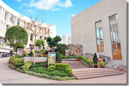 |
| |
|
| (一)請看天主的羔羊（若1:40-42） |
在這幅一望無際的美景中，只見耶穌展開雙手，歡迎聽他召喚而來到他跟前的人。他們戰戰兢兢的拋下漁船，逐步向他走來。碧綠的湖水和蔚藍的天空，令這畫面浸淫在一片祥和及奧秘裡，一切盡在不言中。門徒朝著師傅走去，心中頓時感到莫明的平安。他們愈接近耶穌，看到他的慈顏，他們的倦容便煥發起來，心靈得到舒暢，樂於接受教誨，並下定決心要追隨他。耶穌整個人散發出光芒，使一切變得清晰明亮，讓這些誠心仰望他的人，雙眼流露出果斷的勇氣。
遠處還有別的漁船和群眾，他們也靜候自己的時刻；主耶穌不斷的召叫……他也叫了你和我。
安德肋對伯多祿說︰「我們找到了默西亞。」他遂引領他的弟弟伯多祿到耶穌跟前。從這一刻開始，他們就放下漁網跟隨了耶穌。這正是伯多祿和安德肋的經歷！他們就是這樣跟隨了耶穌！沒有半點遲延或耽擱，毫不猶疑就立即跟隨了他。
這是何等困難的事：放下我們的身份，捨棄我們所建立的一切，離開那純人性的「聖殿」。
耶穌對跟隨他的人說︰「你們找什麼？」
我們找什麼？耶穌的話清晰明確：他要我們度一個新生活，他要作我們的聖殿，讓我們在他內得到蔭庇，找到生命的意義：唯獨他是絕對而確實的。
|
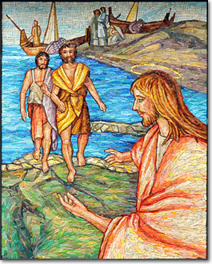
耶穌對西滿說：「不要害怕! 從今以後，你要做捕人的漁夫!」 |
| (二)五餅二魚（若6:1-13） |
翠綠的山巒和蔚藍的天空，散發著一股氣息，襯托著無限和神聖的臨在。
耶穌全神注視著這個小孩子，對他流露出深切的愛意，群眾歡呼聚攏而來，也不能擾亂他心中的寧靜和專注，形成一幅美妙及和諧的景像。
耶穌不願無中生有，他需要那五個大麥餅（大麥造的麵包是窮人的食物，不及小麥造的可口和富營養）。他用這些窮人吃的麵包，餵飽了坐在草地上的五千人。
所需的只是這麼少的東西（一點愛心和憐憫，少許物質財富，一點樂於助人的精神，少許時間），便足以讓大家克服饑餓——包括靈性上的及肉體上的饑餓。
畫中前景的耶穌宛如一位善牧，在山嶺上餵養貧苦的民眾。那位純真的孩子充滿天父的慷慨，樂於以自己的「虛無渺小」，來餵飽到那裡的大夥群眾。
這實在是個分甘同味的奇蹟，足以救助所有的人。這是傳道者作籌算時，必然會遇到的挑戰。聚在那裡的群眾衣飾各異，各有不同的期望，但大家都想看到耶穌和感受他的愛。
|
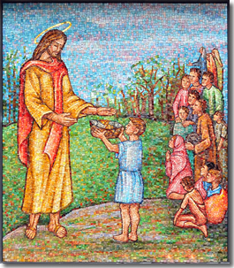 |
| (三)山園祈禱（若18:1-11） |
這畫面出現了幾個重要角色，當中的人物和色調，令這幅景象顯得格外動人和意義深長。耶穌仰首跪著，甘心接受一個看不清的奧秘。離此稍遠，幾個怠懶的宗徒，代表著迷失、無動於衷和膽怯的人類。他們背後黯然發紫的天色，正好象徵人類身陷罪惡的處境。
降來安慰主耶穌的天使，有一雙粉帶著藍光的大翅膀，映照著那被罪惡染得通紅的黑夜。前景的橄欖樹，綠葉婆娑，生氣勃勃，形成這畫面的框架，好像要為耶穌留出一片恬靜的角落。
耶路撒冷的革責瑪尼園中，有幾棵兩千年的古老橄欖樹，樹葉在微風中沙沙作響，好像是要告訴我們，耶穌受難前夕在山園祈禱時所發生的事。他如常人一般，在面對死亡的威脅時，表現得「極度恐慌」。他向那位看似緘默不語和遠離他的父熱切懇求說：「父啊！你如果願意，請給我免去這杯罷！」
耶穌在考驗中輾轉掙扎，在他身上，我們看到整個人類的經歷，體驗到天主靜默不語和劇烈痛苦的黑夜。正為了這原故，我們可以說，耶穌要繼續受苦，直至時間的終結。我們在他的臉上，也找到了我們的容貌，淚流滿面，悲痛憂傷。但耶穌在這黑暗時刻的掙扎，卻沒有令他意氣闌珊而失望，反而全心信賴父和他奧妙的安排，說：「但不要隨我的意願，惟照你的意願成就吧！」就在這刻，一位天使顯現出來安慰扶持他，助他面對艱苦的考驗，同時也是來幫助我們克服誘惑，完成人生的路途。
|
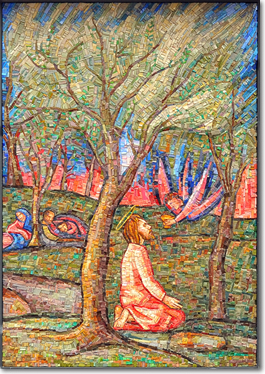 |
| (四)伯多祿否認耶穌（若18:12-27） |
人的差役這幅畫展現伯多祿兩個截然不同的情景：一邊看見他在火堆前，因使女的質詢，而戰戰兢兢；另一邊，見到他因否認了耶穌而哀傷痛哭。
畫中情景的戲劇性，透過色調的改變——由熊熊火光轉成一片蔚藍——顯得格外明確。公雞的出現舉足輕重，而且清晰可見，因為牠要使人記起主耶穌的話。
我們看見大司祭的僕人和婢女，正在生火取暖，二人都認出伯多祿來，他那時也坐在火堆旁取暖。他們指證他是耶穌的門徒，伯多祿卻為了自保而否認了，但站在高處的公雞啼起來，牠的啼聲像響雷刺透了伯多祿的心，使他記起耶穌的話：「雞還未叫以前，你要三次不認我。」
大司祭府庭院的火光，間歇地劃破寒冷的黑夜。圍坐在火堆旁的人，把手伸向火焰，他們的臉被火光掩映著。伯多祿在這情景下被人認出，令他感到困惑，不知所措。這火光不僅照明了他的真面目，也揭露了他的可憐、軟弱、自私，及對輿論的畏懼。數小時前他曾聲稱說：「即便眾人都要跌倒，我卻不然（……）即使我該同你一起死，我也決不會不認你」（谷14:29,31）。
如今他竟冷言否認說：「我不認識你們說的這個人。」這一幕並不因他的否認而結束。那一夜，耶路撒冷夜闌人靜的氣氛，被一個叫聲劃破，尤其劃破了伯多祿的心靈，那是一聲響亮的雞鳴。懺悔的淚水從宗徒的眼睛奪眶而出，因為他想起了耶穌某天在加里肋亞曾說過：「你們當愛你們的仇人，當為迫害你們的人祈禱」（瑪5:44）。他深信，即使在被出賣的這天晚上，基督仍會愛他和寬恕他。
|
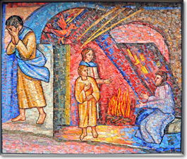 |
| (五)耶穌受審（若18:28-40） |
好一幅輪廓和色調分明的情景，同時亦充滿暗示和怕情。
我們來到了總督府，羅馬首長幾時到耶路撒冷來，便是住在這裡。群眾在外面等候叫囂，要求判處納匝肋人耶穌死刑。總督府內所發生的事，在世界各地無數黑暗的監獄裡，以多種不同的方式，不斷重覆著——囚犯承受酷刑。耶穌受到士兵們的侮辱和毒打，其實他們在受害者身上，正發洩著自己的挫敗。
前一夜，耶穌被人連拖帶拉的送到猶太領袖前，在大司祭蓋法那裡，按猶太人的宗教法律受審。
然而，正是在他蒙受凌辱之際，在別人一連串的指控和誣捏下，基督鄭重地作出他唯一重大而榮耀的聲明。他提醒眾人，他們「將要看見人子坐在大能者的右邊，乘著天上的雲彩降來。」
這光耀的一剎那，照亮了整個畫面和那沉重和陰謀密佈的情景。
這燦爛的亮光清楚地把耶穌的威儀襯托出來。對於猶太領袖向他說的話，他絲毫沒有半點怕情；相反，高傲的猶太領袖和士兵，因耶穌所說的出人意表的話，而顯得害怕。
|
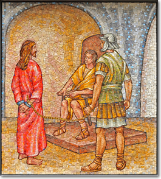 |
| (六)看，這個人（若19:1-16） |
按法律這幅圖畫分成了三個情景：耶穌站在中間，那判斷耶穌罪該受死的群眾（右），以及那洗手卸責的比拉多（左）。
這三個情景清楚分明，以不同高度的位置來區別，色調也由提出指控的人群開始，漸次改變。
最後，色調變成了陰沉的紫藍色，喻意比拉多膽怯畏縮，用洗手來逃避對耶穌的責任。
比拉多想盡一切司法手段，以免耶穌被判死刑，在這事上他更得到妻子的慫恿，可是他最後還是向群眾的壓力讓了步。
他成了奸猾的民眾領袖的犧牲品，更成了惡行的元兇。這都是由於他的膚淺，缺乏理性和判斷力之故，更毋庸說，他只會按人們高呼和不斷重覆的口號作出反應，對人們喊出的「釘死他！」不作他想或加以反省。
他受到原始本能的操控，而且嗜血和殘暴成性。
比拉多也在這事上遷就群眾，遂成了這彌天大罪的同謀共犯，承擔起決定性的責任。洗手的舉動，並不如他所想的令他置身事外，那只是偽善的舉動，不能為他下令要做的事作辯解。所以他犯了疏忽職守之罪，儼如直接行惡一樣。這樣，基督便象徵了掌權者直接或默許不義下的犧牲品。
|
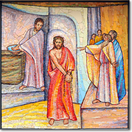 |
| (七)耶穌背負十字架（若19:16-17） |
這畫面含有兩個主要色調——藍與紅——中間插入了兩個形像：耶穌和那沉重的十字架。這兩個色調漸漸淡出，更與周遭的環境融為一體。耶穌那輕柔的形像，散發出光芒，令沉重的十字架顯得輕巧，負荷變得甘飴。耶穌的的臉流露出徹底接納天主聖意及祂慈愛安排的決心，在前往加爾瓦略山的路上，一直支撐著他疲弱的身軀。
耶穌繼續前行，一路衝破那以緋紅色所象徵的黑暗，那令人懼怕的黑暗。
耶穌，他們把十字架放到你的肩上，要在城外把你釘在這架上。這十字架是何等沉重，它結集了門徒的叛離、人民的唾棄、領袖的狠毒、士兵的殘暴、群眾的易變和狂熱，他們數天前才把你像國王般簇擁著送進耶路撒冷。（參看Minke De Vries）
天主的審判針對我們雙手所作的邪惡——即我們因暴力、仇恨、不公義、輕視人類生命、死刑，以及一連串相反人類及其尊嚴和生命的種種罪惡；正是這些罪惡繼續把耶穌釘在十字架上。
天主邀請我們作的，正是棄惡遷善的歸依，以免祂的審判臨於這個充滿血腥和邪惡的歷史。亞毛斯先知早已大聲疾呼說過：「你們尋求上主，才可生存！」（亞5:6）。主耶穌要求我們的，正是公義與仁愛，他的話鼓勵我們要選擇生命和幸福。
|
 |
| (八)耶穌被釘在十字架上（若19:18-24） |
聖殿的帳幔從上而下分開。十字架發出的光芒，照亮了整個畫面。至於那沉重的十字架，耶穌要在無數人的良心中，把它延續至世界的終穹。
如此，這眾人唾棄的酷刑和死亡工具，按照一個我們視為矛盾和難以接受的邏輯，竟成了最後勝利的象徵。茨冠圍繞著十字架的交叉點，在蔚藍的背景下，仿佛閃爍的鑽星；帳幔的白布垂在兩邊，擁抱著整個畫面，好像要告訴我們，天與地已聯成一體，把基督獻上。色調由上而下轉為紫黃色，而十字架呈現深紅色，令人自慚形穢。
路過的人詛咒、嘲笑、辱罵：「救你自己吧！」人們為何愛在軟弱無助者背後，以如此悖理的行為來自娛呢？甚至連那同耶穌一起受釘的罪犯，也以自己僅餘的氣力來嘲笑他。惡暗勢力的王國正在得勢，設法恃著自己的能力去挽留現狀。至於你，天主的羔羊，雖然心中痛苦萬分，依然全心服從天父的旨意。你打斷暴力遞增的形勢，堅決拒絕以暴易暴的行為，以免別人陷於盲目無知中。「父啊！寬恕他們吧！因為他們不知道他們做的是什麼。」的確，你樂於寬恕，因你慈愛的恩賜，當天就把那信了你的右盜，一次而永遠地迎接到樂園去，令那身為外邦人的百夫長，也不勝詑異。（參看Minke De Vries）
|
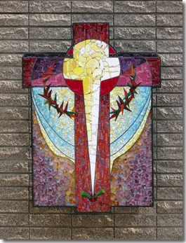
他們就在那裡把他釘在十字架上，同他一起另有兩個人：一個在這邊，一個在那邊，耶穌在中間。猶太人唸了， 因為耶穌被釘在十
字架上的地方離城很近，字是用希伯來、羅馬和希臘文寫的。於是猶太人的司祭長就對比拉多說：「不要寫猶太人的君王，該分了我的衣服，為我的長衣，他們拈鬮。』士兵果然這樣作了。
|
| (九)瑪利亞和若望立於十字架下（若19:25-37） |
東方傳統的基督被釘畫像，顯示基督已戰勝死亡。他整個人表現安詳，身軀修長，宛如安睡中。他雙眼半闔，暗示他已死去，但他的容光卻預示著復活。基督在架上保持著王者的威儀，正如金口聖若望所說的：「目睹那被釘者，我尊稱他為君王。」 這畫面呈現出被釘的耶穌，正安享聖父的光榮；他成了時間的主宰，這點可從襯托著十字架的白光，以及那圍繞在它四周的金光看出來。
十字架橫木的兩端，與宇宙無際的蔚藍色相接，時刻擁抱著大地四極，賜與世人救恩。
首位信徒瑪利亞，以及沒有因為害怕而跑掉的耶穌愛徒若望，成了初生教會的核心。基督臨死前把教會託給聖母，使她成為教會的母親，和一切信徒的靈性母親。 畫中的瑪利亞正接受主耶穌所賜與的苦難和恩寵，由基督那敞開的肋膀——這個流出血和水的「地方」——生產了耶路撒冷的新團體。所有從感恩祭獻和血而產生的團體，就是她最貼切的象徵。瑪利亞懷著慈藹和溫柔的態度，把手仰天高舉，好像要觸摸基督的肋膀，表出願意承受普世的痛苦和憂慮。 若望顯出一副虔誠收歛的神情，瞻仰著耶穌的聖容；他帶著一種神秘的哀傷瞻仰基督——與他心心相印。
瑪利亞和耶穌的愛徒，以及另兩位婦女，站立在十字架旁，其餘的門徒都跑掉了。耶穌臨死時，就在這樣一個初期教會的陪伴下，交付了靈魂。聖神由他那被刺開的肋膀，傾流出洗禮的活水和感恩祭中的聖血。耶穌的母親和愛徒，經他而彼此交付了給對方，在他們身上，我們也在廣闊無邊的共融中，成了他的朋友，而瑪利亞也就成了我們眾人的母親。連黑暗仿佛也被他包容了。這位天主子，亦即天主自己，在其人性內親嘗了人間地獄的滋味，即那仿佛天主不臨在的經驗。「你為什麼捨棄了我？」此刻，天父與聖子的聯繫似乎中斷了，以致耶穌發出了我們失望的疑問。可是我們聽到了另一句呼喊說：「父啊！我把我的靈魂交托在你手中。」深淵雖然短暫打開了，但瞬間即被復活的噓氣填滿。（參看Olivier Clement）
|
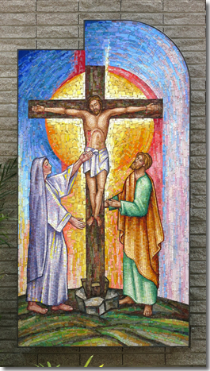 |
| (十)耶穌下降陰府（若19:38-42） |
這幅馬賽克畫提示了逾越三日慶典的深長意義：耶穌在逾越晚餐中自我奉獻，與聖周五和聖周六兩個情景完全隔開，這兩個情景被置於圖中的石拱範圍內。
畫中右邊有許多十字架，以紫色的背景襯托著，喻意我們眾人和每一個人都曾把主耶穌釘在架上。繼續有一個空間——稱為聖周六——在這「時間以外的」時刻，基督「下降陰府」，「天主的聲音響徹死亡的王國」。
畫中有一個立體錯視構成的大石，象徵耶穌聖墓，並有布條和滾開了的圓石。 聖殮布——圖中以一些布條代表著——是最難明瞭的信德奧蹟，同時也是光芒四射的無止境希望的象徵。
在死亡與復活之間，來了一位，且是那唯一的一位，帶著為人受苦受死的印記，走過這片「無人地帶」：「基督的苦難——人類的苦難。」
聖殮布給我們說明了這時刻，它給我們述說了人類和宇宙歷史中那獨一無二的中間時刻。在這時刻裡，天主在耶穌基督身上，不僅與我們分擔了死亡的經驗，更嘗到了停留在死亡中的滋味。
這幅馬賽克壁畫，中央飾有一道燦爛奪目的金光，凸顯和照射著由高天缺口降下的聖神。畫中一大片金色的部分，令人想到聖父的唯一聖生子所作的奉獻，也就是感恩祭獻及與我們的共融。接著的馬賽克波浪紋飾，展現出一片麥田，象徵天主神國在地上的發展。人而天主的耶穌——天主的智慧——就是透過這高天的缺口來到世上，以他的服務和徹底自我奉獻，表現出他的精神和大愛。
浸洗禮最能表達對基督死而復的個人信仰，以及信友決心「栽接」在死而復活的耶穌身上。
的確，在浸洗禮中，我們以象徵的方式，表達了悔罪者「與基督一起」死亡及埋葬，更在冒出水時，表達出歸依者的「重生」。
這裡發生了一件不可思議的事：愛竟滲透了「陰府」：我們即使身處人性最孤單的漆黑中，仍能聽到一個呼喚我們的聲音，找到一隻緊捉著我們、把我們帶出窘境的手。人之所以生活，皆因他能愛和被愛；如今，愛竟然也滲進了死亡之所，那麼生命已到了那裡。
|
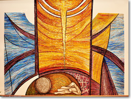 |
| ( 十一) 天國在羔羊的婚宴中達至圓滿 |
| 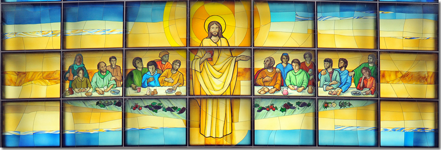 |
聖堂前方的玻璃彩圖呈十字架狀，是要反映出「耶穌苦難聖死這唯一的救恩奧蹟」。
在這神聖畫像中，耶穌成了舉行這婚宴和慶典的「地點」，整個人類都被請來赴宴。的確，赴宴的人有不同民族的面貌和輪廓，以表達出普世人類都被召去領受救恩。
欣賞這圖畫的人即時發覺到：基督形像的中心位置——全被透進來的光線照得透徹，令他的衣服暉映，整個人好像散發出一道金光。
「大餐桌」上，放著感恩聖事的多種象徵：「那象徵不死不滅的石榴；象徵感恩聖事奧蹟的餅、酒和葡萄；象徵知善惡樹的無花果；象徵被選者的樂園和平安的橄欖。」
作為背境的藍天也有其「喻意」，讓人想到以下的話：「那無可言喻的美麗發出燦爛的光輝，在那玻璃海上閃耀發光。」這正好象徵那「沒有日落的日子」，並使我們想起耶穌不斷的邀請：「你們前來赴宴吧！」「亞孟。亞肋路亞！」
「我們全能的天主，上主為王了！」（默19:6）天主不會勉強人接受他統治為王，除非是人出於自願的愛：這正是羔羊婚宴所表達的象徵。
天主為王乃出自他的愛，隨時隨地接納人類。他的所作所為，全是為了激起人的自由，好回應天主的愛。正是為了這目的，天主在人類歷史中的行動，才變得如此容易感傷和不可思議：天主行動的珍貴，在於它不強求於人，而只希望人出於愛而自由接納。我們讚頌天主，正是為了他實踐了自己的統治為王：他的全能，在拯救我們這一行動上，已彰顯出來。
這行動的結果，就是令我們能與羔羊完全結合：主耶穌因了他的逾越奧蹟，把他的愛化成我們歷史中的事實。
這完美結合正好表現在羔羊婚宴的象徵中。「天主的眾僕人，凡敬畏他的，無論大小，請讚美我們的天主吧！」（默19:5）。這讚歌開端的「亞肋路亞」，被多番重覆詠嘆和增強，皆因一切蒙受天主慈愛者所感受的救恩，足以令他們堪當表達這頌讚。
他們都是天主的僕人，是全心信賴他的人，他們接納並贊同天主的計劃和方式。他們並非以什麼來換取天主的愛，只是絕對認同了這愛（「凡敬畏他的」）。他們在讚歌中是那些「無論大小」者：他們無論屬大屬小，在天主面前同為僕人：沒有尊卑之分。
|
|
| |
|
| |
|
| |
|